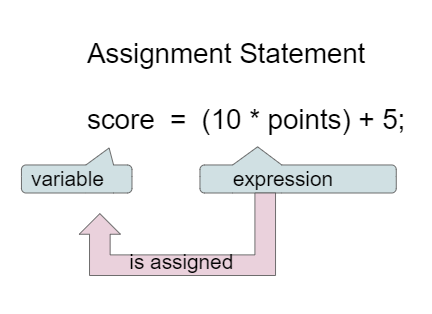

Using Objects and Methods
Assignment statements (赋值语句) initialize or change the value stored in a variable using the assignment operator =.

Assignment statement diagram
Read score = points * 10 + 5; as score gets the value of points * 10 + 5, not as a math equation.
An assignment statement always has a single variable on the left-hand side.
The variable on the left must be able to store the value’s type.
Set one variable’s value to a copy of another variable’s current value.
After x = y;, changing y later does not change x.
Trace the code by hand before checking the answer.
What are the final values of x, y, and z?
Answer: x = 1, y = 2, z = 3.
Build the code that swaps the values in x and y.
Needed blocks:
Distractor:
The extra variable temp is needed because assignment overwrites the old value.
Every variable must be assigned a value before it can be used in an expression. That value must come from a compatible data type.
If an expression uses at least one double, the expression usually evaluates to double.
The code looks reasonable, but it has an incompatible type error. Change one variable’s type to fix it.
Expected output after the type fix:
null means no object referenceReference types like String can be assigned a new object or null.
null is a special literal that means the reference is not associated with any object.
null is not the same as an empty string."" is a real String object with zero characters.Expected output:
The right side uses the previous value of score, then stores the new value back into score.
Modify the update statement.
Predict:
score = score + 10;?This pattern prepares students for counters and loops.
Variables are a powerful abstraction because the same algorithm can run with different input values.
Input can be:
Java’s Scanner class is one way to obtain keyboard input.
Keyboard input is useful in class, although it is not directly tested on the AP CSA exam.
The same code works for any typed name.
Dog Years challenge
Fill in years, compute ages, and print labels with the results.
Your program should include these formulas.
A classroom-ready solution should:
currentYear, birthYear, and dogBirthYearSystem.out.print or System.out.printlnConsider the code segment.
What is printed?
Answer: 8.0.
Reason: a / b uses integer division, then multiplication with c produces a double.
score = score + 1 as a valid update patternnull as a reference value that means no object is associatedScanner stores keyboard input in variables, although keyboard input is not an AP exam target